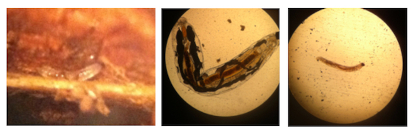
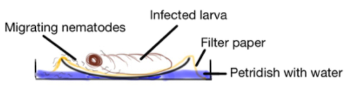

In greenhouses Sciarid flies can be a significant nuisance for workers whereas the fly larvae can cause large loss of seedlings when high numbers are present. Sciarid flies constitute the family Sciaridae with the genus Sciara being identified as bringing damage to ornamental crops in the greenhouses of [client] farm. The larvae of the Sciara flies nestle within the root system and eat themselves up into the stem of the plants. Furthermore, the larvae can also cause indirect damage spreading mites, nematodes, viruses and fungal spores. The larvae can grow between 5-12 mm in length and 0,5 to 1,5 mm in diameter. They are without legs and have a conspicuous black head (Figure 1).

The nematode Steinernema feltiae and the predatory mites Hypoaspis spp. are mainly introduced against the larvae of sciarid flies [1].
This document will focus on the large scale production of Steinernema feltiae.
There are two approaches for breeding S. feltiae:
Both have their advantages and disadvantages which, after elaborating on both proceses, will be summarized.
Bedding[2,3] developed a technique whereby large numbers of nematodes may be economically produced using a chicken offal medium on a porous foam substrate. The important factors for growing the nematodes are:
Polyether polyurethane provides the largest surface-to-volume ratio while providing adequate interstitial space[4]. The article furtherore describes how Xenorhabdus nematophilus bacteria are used as the bacterial symbiont for S. feltiae.
Liquid culture with the bacteria are prepared in a nutrient broth. The broth and the bacteria are mixed into a foam substrate, in glass flasks or large autoclavable bags that serve as rearing containers. Subsequent inoculations can be performed with foam already containing the bacteria. A small liquid volume of nematodes can be added a few days after the bacterial inoculation. Purity of the culture can be checked on MacConkey agar platers. For harvesting, the foam is piled on a 20 meshes/inch sieve that is placed in a pan of tap water. The foam is just submerged for 2-24 hours.The infective larvae will migrate into the water. An average harvest in one bag can contain over 109 S. feltiae.
Another study on in vitro production describes how nematodes were grown in Leighton tube cultures with medium containing tryptic soy broth, yeast extract, cholesterol and 24-hour log phase bacterial cells, under aerated conditions [5]. Nematode densities reached 47.000/ml after 14 days.
The steinernematids infect and reproduce in a broad spectrum of insects that may be reared. Since steinernematids and heterorhabditids infect and reproduce in a broad spectrum of insects, they may be reared in vivo at the farm. Galleria mellonella is often used as a host because it is widely available, easily reared, very susceptible and an excellent host for nematode reproduction. Average production are on the order of 30.000 to 50.000 S. feltiae infectives harvested from one Galleria. If Galleria is not available at the farm, other (local) moths may be experimented upon for its susceptibility and multiplication of S. feltiae.
In short, the process starts with a 1ml dilution of in sterile distilled water with a suspension near 200 nematodes/ml. The suspension is evenly distributed on a filter paper in a petri-dish-lid. Ten Galleria larvae are added to have about 20 nematodes per larva. The lid is covered with the petri-dish-bottom and stored in a plastic bag to conserve moisture, at room temperature.
Five to seven days after infection, the infected larvae will be yellowish brown and limp. (Larvae infected with other pathogens are usually blackish and smell and can contaminate the whole batch.
The nematodes are harvested with a White trap[7] (figure 2).

| In Vitro | In Vivo |
|---|---|
| Advantages | Advantages |
| Production process can be controlled in detail. | Less contamination problems |
| Once installed, little hands-on time. | More hands-on time, but labour is cheap. |
| High production yield | Hardly any additional consumables and equipment needed. |
| - | Fun & easy |
| Disdvantages | Disdvantages |
| High contamination risk. | Smaller ‘circuit-board’ to influence the production process. |
| Additional purchase of equipment and consumables. | Low/medium nematode yield |
| Separate bacterial culture needed | Separate insect breeding needed |
| Complicated process | Labour intensive |
How much nematodes are needed for one bed? How to breed Galleria mellonella or a similar insect? What are the exact costs on equipment and consumables for in vitro cultivation?
[1] Malais, M.H. & W.J. Ravensberg. Knowing and recognizing. Koppert B.V. 2003.
[2] Bedding (1981).
[3] Bedding R.A. Large scale production, storage and transport of the insect parasitic nematodes Neoplectana and Heterorhabditis spp. Annals of Applied Biology 104:117-120. 1984.
[4] Bedding (1986).
[5] Buecher, E.J. & I. Popiel. Liquid culture of the Entomogenous nematode Steinernema feltiae with its bacterial symbiont. Journal of Nematology. 21(4):500-504. 1989.
[6] Dutky et al. 1964
[7] Vvhite 1927